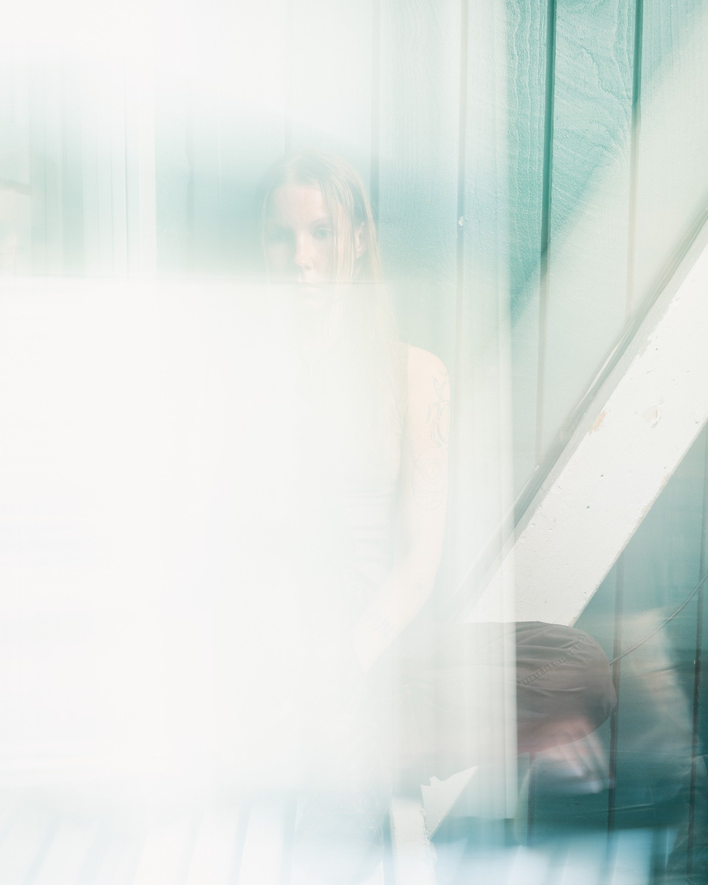
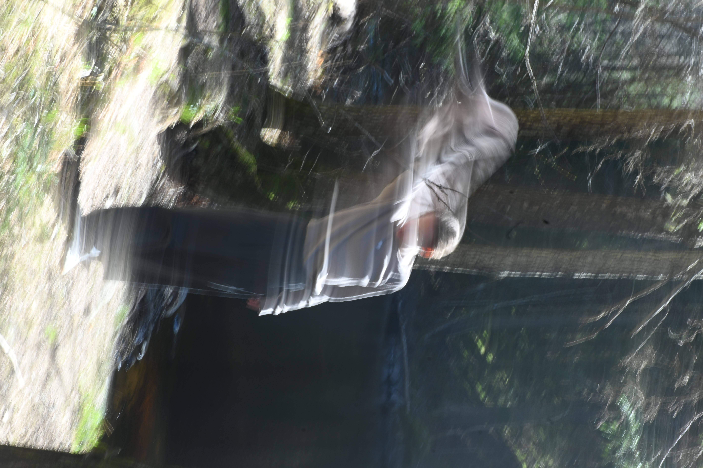

Snappy snares? You got it. Bad-to-the-bone analog techno bliss? Look no further. Naughty tech grooves? They've got you covered.
Carlina Carpelan is a Helsinki-based DJ deeply rooted in Finland’s underground dance music scene, active for years within the local club circuit.
Carlina has built a strong reputation for delivering high-energy sets that thrive on rhythm, drive and raw physicality. Their sound explores the leftmost fields of electronic music: analog-leaning, percussive and groove-focused, with a sharp ear for tension and release.
Carlina’s sets are immersive journeys guided by instinct, flow and a clear connection to the dance floor. Whether playing outdoor festival stages or sweaty late-morning basement hours, they bring an unmistakable intensity and momentum to every slot.
In recent years, Carlina has shared booths with international names such as DJ Stingray, Wata Igarashi, Luke Slater and Jane Fitz, while also taking their sound beyond Finland to booths abroad.

